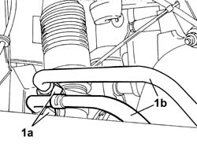
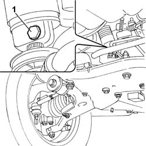
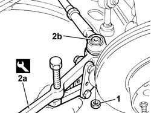
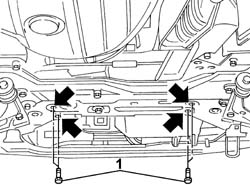
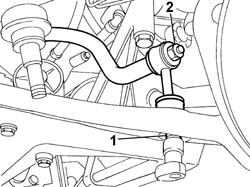
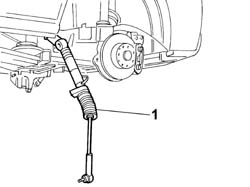

4130A10 POWER STEERING BOX - R+R - CHECK TOW-IN IF NECESSARY SEPARATELY - INCLUDES BLEEDING
- Path
- Procedures > 41 STEERING UNIT > 4130 POWER STEERING > 4130A POWER STEERING BOX > 4130A10 POWER STEERING BOX - R+R - CHECK TOW-IN IF NECESSARY SEPARATELY - INCLUDES BLEEDING
- Kind
- repair procedure (removal / refitting; the operation number is the code)
- Applies to
- all engines; all production periods
- Interactive page
- https://sloeber94.github.io/elrnDB-fDct/en/#/244001166
Applies to: all engines; all production periods
 Removing
Removing
 Refitting
Refitting- Disconnect the negative battery terminal.
Applies to: all engines; all production periods
- Position a suitable container for collecting the power assisted steering fluid from the steering box.
1. Undo the connectors on the steering box (1a) and disconnect the two pipes (1b) connected to it.

Applies to: all engines; all production periods
1. Undo the bolt fixing the lower shaft to the power assisted steering box pinion.

Applies to: all engines; all production periods
1. Undo the nut fixing the track rod end to the steering knuckle.
2. Extract the track rod end (2b) from the housing in the steering knuckle using the tool (2a).
 | Description | Code | Function |
|---|---|---|---|
2a | Head extractor | 1.847.038.000 | Ball joint removal |

Applies to: all engines; all production periods
1. Undo the bolts securing the power assisted steering box to the crossmember.

Applies to: all engines; all production periods
1. Undo the fixing nut and disconnect the connecting rod for the anti-roll bar from the track control arm.
2. Loosen the nut fixing the anti-roll bar in order to be able to move it outside of the working area.

Applies to: all engines; all production periods
1. Remove the power assisted steering box from the timing side wheel arch.

Applies to: all engines; all production periods
Refitting
Removing- Fit the power assisted steering box in the timing side wheel arch.
- Tighten the nut fixing the anti-roll bar.
 | Value - daNm | Fastening | Component | Ø |
|---|---|---|---|---|
. | 5,6 | Nut | FRONT ANTI-ROLL BAR JOINTS | M12 |
- Tighten the nut fixing the anti-roll bar connecting rod to the track control arm.
| Value - daNm | Fastening | Component | Ø |
|---|---|---|---|---|
. | 8 | Nut | FRONT ANTI-ROLL BAR SUPPORTS | M12 |
- Tighten the bolts securing the power assisted steering box to the crossmember to torque.
| Value - daNm | Fastening | Component | Ø |
|---|---|---|---|---|
. | 11 | Bolts | POWER STEERING BOX | M12 |
- Reposition the track rod ends in the housings in the steering knuckle and tighten the fixing nuts to torque.
| Value - daNm | Fastening | Component | Ø |
|---|---|---|---|---|
. | 6.9 | Nut | ADJUSTABLE LINK BALL JOINTS | M16 |
- Tighten the nut fixing the lower shaft to the power assisted steering box pinion to torque.
| Value - daNm | Fastening | Component | Ø |
|---|---|---|---|---|
. | 2,5 | Bolt | FIXED ELEMENTS STEERING SHAFT STEERING | M8 |
- Connect the fluid pipes to the steering box and tighten the connectors to torque.
| Value - daNm | Fastening | Component | Ø |
|---|---|---|---|---|
. | 5,5 | Nut | PIPE BTWN PUMP + POWER STEERING BOX | M16 |
| Value - daNm | Fastening | Component | Ø |
|---|---|---|---|---|
. | 6,3 | Nut | RETURN PIPE TO POWER STEERING RESERVOIR | M18 |
- Refill the power assisted steering system using the appropriate fluid.
 | Description | Qty. | Component | Type | Classification |
|---|---|---|---|---|---|
. | TUTELA GI/A | 1.3 litri | POWER ASSISTED STEERING CIRCUIT | Oil | ATF DEXRON 2 D LEV SAE 10 W |
Applies to: all engines; all production periods
Op. 7055B54 UNDER-ENGINE GUARD - R R
- Connect the negative battery terminal.
Applies to: engines: 2.0 16V, 2.0 JTD 8V, 2.3 JTD 16V; all production periods
See in Op. 1008C32
Applies to: engines: 2.0 16V, 2.0 JTD 8V, 2.3 JTD 16V; all production periods
See in Op. 1008C32